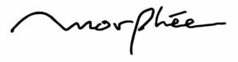

Trade Mark Journal No.2025/042 17 October 2025
WO0000001878205 (18)
Office of origin: Japan
Date of International Registration:30 July 2025
Date of designation in the UK:
30 July 2025

- Class 18
- Attaché cases; backpacks; bags for campers; bags for climbers; bags for sports; bags; beach bags; boston bags; briefcases; card cases [notecases]; carry-on bags; chain mesh purses; children's shoulder bags; conference folders; credit card cases [wallets]; folding briefcases; garment bags for travel; gladstone bags; handbags; key cases; leather shoulder belts; motorized suitcases; music cases; rucksacks; shoulder bags; school bags; suitcases; suitcases with wheels; tote bags; travelling bags; travelling sets [leatherware]; trunks [luggage]; valises; wheeled shopping bags; reusable shopping bags; carrying bags; clutch bags; card wallets; key wallets; leather wallets; pocket wallets; purses; wallets; wallet chains; felt pouches; key pouches; leather pouches; waist pouches; business card cases; industrial packaging containers of leather; bags [envelopes, pouches] of leather, for packaging; boxes of leather or leatherboard; cases of leather or leatherboard; hat boxes of leather; leather cord; leather straps; animal skins; chamois leather, other than for cleaning purposes; furniture coverings of leather; kid; leatherboard; leather, unworked or semi-worked; raw skins; rawhides; tanned leather; leather; fake fur; fur-skins; imitation fur; moleskin [imitation of leather]; semi-worked fur; clothing for dogs; clothing for pets; collars for animals; dog bellybands; dog collars; dog shoes; dog waste bag dispensers adapted for use with leashes; leather leads.
ASSEMBLE Inc.
Representative: iLINK International Patent & Trademark Office, 2nd Floor, Samoncho Pax Building,, 13-5, Samon-cho,, Shinjuku-ku, Tokyo 160-0017, JAPAN